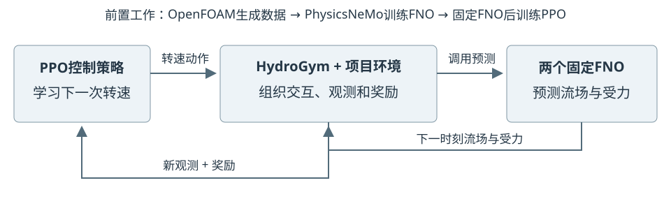
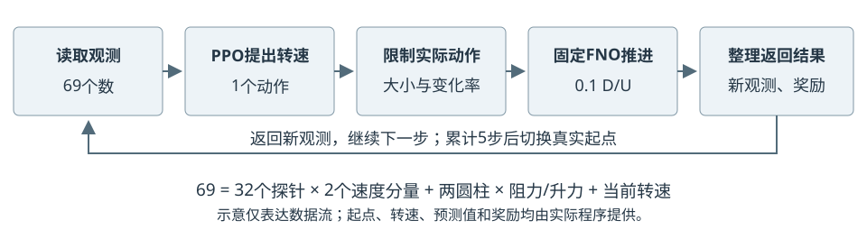
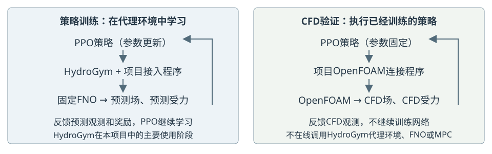

2026年10月7日 · 图文说明
本项目用HydroGym组织FNO代理环境中的强化学习训练，再用OpenFOAM独立验证固定策略的反馈控制效果。 HydroGym负责环境交互，FNO负责训练期间的状态预测，PPO负责学习动作，CFD负责提供数据和检验结果；四者不能互相替代。
主动流动控制是根据流动状态调节旋转、吹吸气等执行器，以改善阻力、受力波动等指标。HydroGym把这类问题组织成统一的观测、动作、推进和奖励接口，便于连接强化学习算法、重复实验及比较方法。我们沿用这一接口，接入已有双圆柱代理，不必让PPO直接处理CFD文件和模型内部细节。平台论文，2025
RL适合探索难以手工设计的时变控制策略，但“强非线性”或“多执行器”不是充分或必要条件：本项目只有一个旋转执行器，也可以研究RL。存在涡脱落并不意味着PID、LQR或低阶模型控制必然无效。若简单控制已能满足目标，应优先保留其成本和可靠性优势，并作为RL的比较基线；几何复杂、工况变化大也不自动使RL更合适。
下表说明研究方向，不代表本项目已实现这些场景，也不代表这些论文都使用HydroGym。
| 场景 | 控制任务与代表研究 |
|---|---|
| 翼型分离与阵风响应 | 用吹吸气等动作调节分离、改善受力。已有二维翼型分离的2025数值研究；HydroGym也展示翼型阵风控制环境。不能据此推定策略已迁移到风洞。 |
| 风电场尾流 | 协同偏航，重新分配尾流影响，提高总功率；2024研究使用经过实验验证的解析尾流模型，不是逐步全阶CFD，也不是已证实的HydroGym案例。 |
| 开口空腔振荡 | 利用射流降低剪切层振荡和观测波动。HydroGym的2026论文包含这一类数值控制基准。仿真效果与风洞迁移属于不同验证阶段。 |
| 车体尾流减阻 | 通过可动表面等调节尾流。REACT预印本，2025/2026报告Ahmed车体模型上的风洞直接学习；不是所有RL都先经过CFD预训练。 |
| 圆柱尾流与涡激振动 | 唐辉团队2024年尾流圆柱自旋研究利用RL抑制升力波动，与本项目方向相关；另有VIV控制研究。VIV涉及结构运动，本项目只控制固定中心双圆柱的受力。 |
| 热声振荡 | 调整控制器参数以抑制压力振荡。2025实验研究将RL结合既有增益/相位控制器，说明RL也可辅助传统控制；不是本项目的计算任务。 |
这些例子支持“RL是一种可评估的控制方法”，不支持“RL普遍优于传统方法”。只有几何优化而没有时间反馈时，通常无需搭建本文的控制循环；仿真与实验差异很大时，应先改善模型和验证条件，而不是直接迁移策略。
“后端”指给定当前状态和动作后，实际计算下一状态的程序。它可以数值积分流动方程，也可以使用学习得到的近似模型。官方当前资料列有Firedrake、MAIA、NEK和JAX相关后端。本项目采用固定版本和自定义FNO推进器，OpenFOAM连接也由项目程序实现；这些接入工作不是安装平台后自动完成的。官方仓库
| 路线 | 每次训练交互的计算 | 本项目状态 |
|---|---|---|
| CFD环境中训练RL | 动作后执行CFD时间积分，再返回观测与奖励 | 可选路线；不是当前已部署PPO的训练方式 |
| FNO代理环境中训练RL | 动作后调用固定FNO，递推场并预测受力 | 当前已采用；HydroGym组织交互，SB3训练PPO |
| FNO初始化、CFD继续推进 | 用模型生成起始场，随后由CFD求解 | 没有采用；当前初态反而来自已保存的真实CFD |
| 固定策略的CFD验证 | 策略读取CFD观测、输出动作，OpenFOAM继续求解 | 已经完成基本案例；不在线调用FNO，不继续训练PPO |
实际顺序：OpenFOAM数据 → 训练FNO → 恢复真实CFD起点 → FNO推进5步供PPO学习 → 换真实起点继续训练 → 固定PPO → OpenFOAM闭环验证。 训练段内不是FNO与CFD轮流求解，也不是用FNO自动生成初始流场。当前FNO承担状态预测，不是低维观测编码器。
PDEBase保存状态、TransientSolver推进、FlowEnv提供环境接口；实际接入类为Full40CanonicalSurrogateFlow和TandemFNOStepper，同时配置状态对象与推进器。Gymnasium的step返回观测、奖励、终止标记、截断标记和辅助信息5项。固定版本源码主要风险是分布漂移和策略利用模型误差：即使转速不超范围，新动作序列仍可能访问训练中少见的状态，使代理预测失准、训练奖励虚高。现有真实起点、短段训练和动作限制只能缓解，不能消除风险。后续可根据固定评价补充策略访问状态的CFD数据，再重训代理与兼容策略、独立验证；若按不确定性或信息量选择样本，可进一步构建主动学习流程。
这是后续改进建议，不是已完成的自动学习循环。CFD反馈已通过限定工况验证，但代理完整精度与有效MPC仍待解决；用本案例声称风洞迁移、VIV抑制或跨工况可靠控制，均超出当前证据。
HydroGym把流动计算组织成控制算法可以反复交互的环境。 控制算法提出动作，环境推进一段流动，返回新的观测和评价分数，算法再据此调整控制策略。这里的“环境”不是安装软件的虚拟环境，而是供控制算法交互的流动系统。
HydroGym是面向流动建模与控制的开源平台，提供标准环境接口，也包含流动算例和求解器后端。不能将整个平台简单理解成一个接口。但在本项目中，实际使用的核心是它的FlowEnv环境接口；推进流动的是我们接入的FNO代理，而不是直接运行HydroGym自带的流动算例。[1]

图1为软件关系示意，不是流场计算结果。FNO是学习流动演化的预测网络；PPO是学习控制动作的强化学习算法。二者不是同一个模型。
| 部分 | 在本项目中的具体职责 |
|---|---|
| OpenFOAM | 求解速度、压力和圆柱受力；产生数据并验证控制效果 |
| PhysicsNeMo FNO | 根据当前流场和转速，预测下一时刻的流场与受力 |
| HydroGym | 提供环境交互接口，组织开始、推进和返回结果 |
| Stable-Baselines3 PPO | 收集交互记录，更新决定转速的控制策略 |
| 项目接入程序 | 定义双圆柱状态、观测、动作限制、奖励和数据记录 |
我们采用两个中心位置固定的串联圆柱，前柱不转，后柱可以旋转。HydroGym并不会自动知道应当减阻，也不会自动生成这个双圆柱案例；需要将上述物理状态和控制目标接入环境。
开始一段交互时，先恢复一个已有CFD状态。 reset()表示重置环境：读取起始流场、实际转速及过去的受力记录，形成策略的第一次观测。它不是重新训练FNO，也不是把所有速度清零。本项目训练使用24个已验证的真实起点轮换开始。

观测。 PPO每次接收69个数：32个探针位置各有两个速度分量，共64个；再加前、后圆柱各自的阻力与升力系数，共4个；最后是当前转速。阻力沿来流方向，升力垂直来流方向。这里不存在额外的“四力”物理概念。
动作。 PPO输出后圆柱的请求转速。项目程序先限制转速大小和相邻动作变化，再把实际动作交给代理模型。当前限制为无量纲角速度绝对值不超过0.75，每次变化不超过0.1；角速度按“物理角速度×直径÷来流速度”定义。
推进。 两个固定的FNO分别预测下一流场和圆柱受力；从新流场提取探针速度，构成下一次69维观测。一次step(action)推进0.1个对流时间单位，即来流经过0.1个圆柱直径所需的物理时间，不是计算机耗时0.1秒。[2]
奖励。 奖励是供PPO学习的一个数。项目鼓励总阻力下降，并惩罚减阻不足、后柱升力波动过大、平均升力偏置过大以及过大的转速和动作变化。奖励由项目代码定义，HydroGym不会自动替我们选择目标。
升力波动需要一段历史，不能只看一个瞬时值。因此环境保留62个受力采样点，用于计算均值和波动；每预测一步，就用新预测值替换最旧点。最初这些历史点来自真实CFD，之后逐步加入预测值，不读取未来真值。它们不是FNO的62帧输入，也不额外加入PPO的69个观测数。
完成一步后，环境返回“新观测、奖励、是否结束、辅助记录”。达到当前设置的5步长度时结束这一小段，换一个真实起点继续；这是训练长度限制，不代表控制成功或流动已经稳定。
一次交互只产生一条经验，不会立即把所有网络训练一遍。本项目每收集512条交互记录，PPO再分批重复学习4遍，完成8次参数更新。整个已部署策略的训练共32,768条交互、64轮采集和512次优化器更新。此阶段FNO保持固定，学习的是PPO控制策略。
训练使用4个环境实例，每个实例轮换6个起点，共24个起点。这4个实例在一个进程中依次推进，不等于4块GPU并行。每段只预测5步，有助于限制代理误差累积和训练成本，但不能证明长时间预测准确。

训练后固定PPO参数，在CPU上读取OpenFOAM计算的69个观测数，给出后柱转速，再让OpenFOAM推进20个求解时间步，取得下一次观测。这样不断重复，形成真实CFD反馈闭环；同时运行无旋转对照，检验受力改善。
当前成功的验证循环由项目OpenFOAM连接程序执行，不依赖在线调用HydroGym的FNO代理环境。 FNO和PPO都不在验证时继续学习，也不是MPC在线选择动作。HydroGym的主要贡献发生在前面的策略训练阶段：将代理模型变成PPO可以规范交互的环境。
在雷诺数100、间距比5的同一工况下，保留策略新增800个反馈周期的验证得到：两柱总平均阻力降低4.13%，后柱去均值升力波动降低17.92%，平均升力偏置为对照波动尺度的1.24%。这些数值来自OpenFOAM验证，不是HydroGym中的训练奖励。
完整代理预测精度仍未达标，MPC也尚未证明有效减阻。因此，接通HydroGym并完成PPO训练，只说明训练流程已经建立；控制效果仍须由CFD独立验证，不能推广为跨工况有效、硬实时控制或净节能。
[1] HydroGym官方项目。平台概述与项目实际使用范围分开说明，不将最新版全部功能视为本项目已使用能力。
[2] 项目固定版本的FlowEnv源码；项目技术栈说明、E082训练核查、E114闭环验证。图示省略坐标对称变换、文件校验等工程细节；精确实现以这些记录为准。
研究人员想让后圆柱自动调整转速，于是先准备CFD起始状态、训练好的FNO和评分规则，把它们接入HydroGym。PPO读到流动观测，提出一个转速；环境程序限制动作，再调用FNO预测后果，返回新观测和得分。这样反复练习，PPO根据积累的记录学习更合适的动作，HydroGym负责把每次练习组织起来。
练习结束后，研究人员固定PPO策略，把它交给OpenFOAM验证。策略仍然根据观测调整转速，但这次反馈来自实际CFD求解，不再来自FNO预测。只有与无旋转对照比较后，才能判断减阻和升力波动是否真的改善。HydroGym帮助组织了训练，却不能替代这场验证；代理预测有误，练习得分高也可能控制不好。